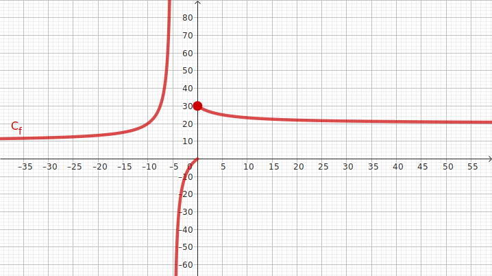
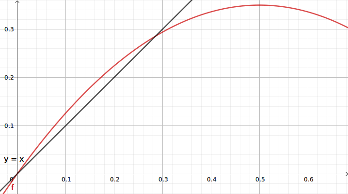
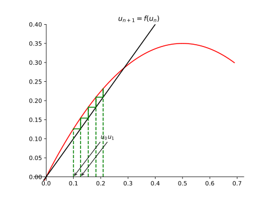

Graphiquement : Limites et continuité (5 points)
Voici la courbe \(\mathcal{C}_f\) d'une fonction \(f\) définie sur
\(\mathcal{D}_f=\left]-\infty;-5\right[\cup\left]-5;+\infty\right[\)

Graphiquement, déterminer les limites suivantes, et préciser dans chaque colonne «asymptote
vericale/horizontale» aini que les équations de ces asymptotes.
\( \displaystyle\lim_{x\to-\infty} f(x) = \)
\( 10^+ \)
\( \displaystyle\lim_{x\to-5^-} f(x) = \)
\( +\infty \)
\( \displaystyle\lim_{x\to-5^+} f(x) = \)
\( -\infty \)
\( \displaystyle\lim_{x\to+\infty} f(x) = \)
\( 20^+ \)
asymptote
horizontale
d'équation
\(y=10\)
asymptote verticale d'équation \( x=-5 \)
asymptote verticale d'équation \( x=-5 \)
asymptote horizontale d'équation \( y=20 \)
La fonction \(f\) est-elle continue en 0 ? Justifier.
\(f\) n'est pas continue en 0 puisque sa limite à gauche est 0- et sa limite à
droite est 30-. On peut seulement dire qu'elle est continue à droite de 0 puisque sa
valeur en 0, qui est 30, correspond à sa limite à droite de 0.
On définit la fonction \(g\) sur \(\mathcal{D}_g=\mathcal{D}_f\) par \(g(x)=\dfrac{1}{f(x)}\).
Donner les limites et valeurs suivantes :
\( \displaystyle\lim_{x\to-\infty} g(x) = \)
\( 0{,}1^- \)
\( \displaystyle\lim_{x\to-5^-} g(x) = \)
\( 0^+ \)
\( \displaystyle\lim_{x\to-5^+} g(x) = \)
\( 0^- \)
\( \displaystyle\lim_{x\to+\infty} g(x) = \)
\( 0{,}05^- \)
\( \displaystyle\lim_{x\to0^-} g(x) = \)
\( -\infty \)
\( \displaystyle\lim_{x\to0^+} g(x) = \)
\( \left(\frac{1}{30}\right)^+ \)
\( g(0) = \)
\(\frac{1}{30}\)
Tourner s.v.p.
Limites (7 points)
On note \(f(x)=\sqrt{\dfrac{2x-1}{x+3}}\).
Étudier le signe de \(\dfrac{2x-1}{x+3}\) pour \(x\) réel \(\neq -3\).
\(\frac{2x-1}{x+3}\) est du même signe que le trinôme
\((2x-1)(x+3)\) dont le terme dominant est \(2x^2\), et dont les racines sont 0,5 et -3
(interdite pour \(f\)), soit négatif entre 0,5 et -3 (exclu) et positif partout
ailleurs.
En déduire l'ensemble de définition \(\mathcal{D}_f\) de \(f\).
La racine carrée acceptant uniquement des nombres positifs, \(f\) est définie sur
\(\left[-\infty;-3\right[\cup\left[0{,}5;+\infty\right[\)
Déterminer les limites de \(f\) en \(+\infty\), \(0{,}5^+\) et \(-3^-\).
On note \(h(x)=\dfrac{10}{x\sqrt{x^2+1}-x^2}\). Déterminer la limite de \(h\) en \(+\infty\) et
\(-\infty\).
\( \displaystyle \lim_{x\to \pm\infty} \dfrac{10}{x\sqrt{x^2+1}-x^2} = \lim_{x\to \pm\infty}
\dfrac{10\left(x\sqrt{x^2+1}+x^2\right)}{x^2(x^2+1)-x^4}
= \lim_{x\to \pm\infty}
\dfrac{10\left(x\sqrt{x^2+1}+x^2\right)}{\cancel{x^4}+x^2-\cancel{x^4}}
\)
\(
= \lim_{x\to \pm\infty}
10\left(\frac{1}{x}\sqrt{x^2(1+\frac{1}{x^2})}+1\right)
= \lim_{x\to \pm\infty}\)
\(
10\left(\frac{|x|}{x}\sqrt{1+\frac{1}{x^2}}+1\right)
=10\left(\pm 1 \sqrt{1+0^+}+1\right)
\)
donc 20 en \(+\infty\) et 0 en \(-\infty\).
Suites (8 points)
On définit sur \(\mathbb{R}\) la fonction \(f\) par \(f(x)=1{,}4x(1-x)\).
La suite \((u_n)_{n\in\mathbb{N}}\) est définie pour tout \(n\in \mathbb{N}\) par
\(\left\{\begin{array}{l} u_{n+1}=f(u_n) \\ u_0=0{,}1\end{array}\right.\)
De quel type est la fonction \(f\) (exemple de types possibles : affine, sinusoïdale, ...).
Est-elle continue ?
\(f\) est un trinôme (=polynôme du second degré). Sa courbe représentative est une parabole.
De fait, la fonction \(f\) est continue sur \(\mathbb{R}\).
Résoudre l'équation \(f(x)=x\) dans \(\mathbb{R}\) pour obtenir les points fixes \(r\) et \(s\)
de \(f\) (on choisira \(r<s\)).
\(\begin{eqnarray} & f(x) = x \\
\Leftrightarrow & 1{,}4x(1-x) = x \\
\Leftrightarrow & 1{,}4x(1-x) - x = 0 \\
\Leftrightarrow & 1{,}4x-1{,}4x^2 - x = 0 \\
\Leftrightarrow & 0{,}4x-1{,}4x^2 = 0 \\
\Leftrightarrow & x(0{,}4-1{,}4x) = 0 \\
\Leftrightarrow & x=0 \textrm{ ou } 0{,}4-1{,}4x=0 \\
\Leftrightarrow & x=0 \textrm{ ou } x=\frac{-0{,}4}{-1{,}4}=\frac{2}{7} \\
\end{eqnarray}
\)
donc \(r=0\) et \(s=\frac{2}{7}\).
Démontrer que \(f\) est croissante sur \( \left]-\infty;0{,}5\right[ \).
\(f(x)=1{,}4x(1-x)=1{,}4x-1{,}4x^2\) a pour terme dominant \(-1{,}4x^2\) ; elle est
décroissante puis croissante ; son maximum est atteint en
\(x=\frac{-b}{2a}=\frac{\cancel{-1{,}4}}{2\times \cancel{-1{,}4}}=0{,}5\).
Donc \(f\) est croissante sur \(\left]-\infty;0{,}5\right]\).
Calculer \(u_1\) et \(u_2\) ; construire les termes de la suite jusqu'à \(n=4\) sur la figure
ci-dessous, et conjecturer le sens de variation ainsi que la limite de \((u_n)\).
\(\begin{array}{l}
u_0 = 0{,}1 \\
u_1 = 0{,}126 \\
u_2 = 0{,}1541736 \\
u_3 = 0{,}182565741488256 \\
u_4 = 0{,}208929688132339
\end{array}
\)
La suite semble donc croissante, et semble converger vers le point fixe \(s=\frac{2}{7}\) de
\(f\)
Démontrer par récurrence, que pour tout entier \(n\), on a \(H_n : u_n\leqslant u_{n+1}\leqslant
s\)
En déduire que \((u_n)\) converge vers un réel \(l\).
\((u_n)\) est croissante et majorée par \(s\) ; elle converge donc vers un réel \(l\leqslant
s\).
Démontrer que \(l=s\)
Lorsque \(n\to+\infty\), l'égalité \(u_{n+1}=f(u_n)\) devient \(l=f(l)\) (on a
\(\displaystyle\lim_{n\to+\infty}{f(u_n)}=f(l)\) par continuité de \(f\)), donc : ou bien
\(l=r=0\), ou bien \(l=s=\frac{2}{7}\) ; comme \(u_0>0\) et \((u_n)\) est croissante,
\(l=s\)


Bonus
Un automobiliste a parcouru la moitié de son trajet à 30km/h. On note, en km/h, \(v\) sa vitesse moyenne sur
la seconde moitié du trajet et \(V\) sa vitesse moyenne sur la totalité du trajet. Que peut-on dire de
\(\displaystyle\lim_{v\to+\infty}V\) ? Interpréter.